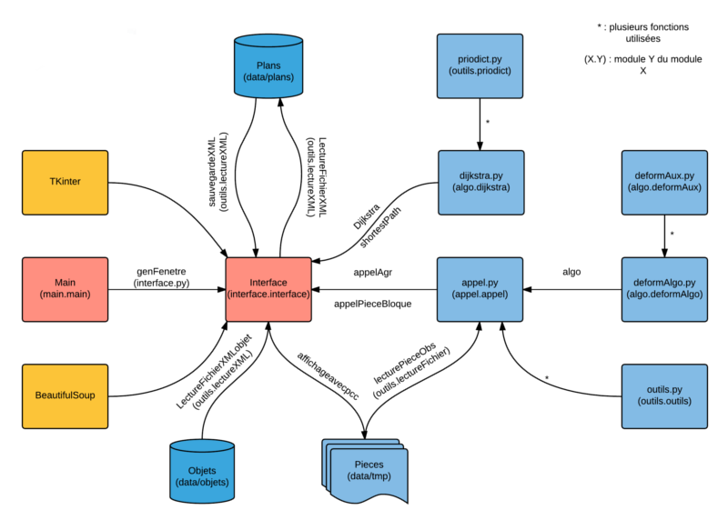
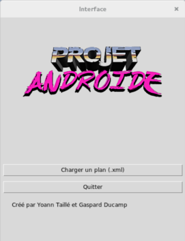
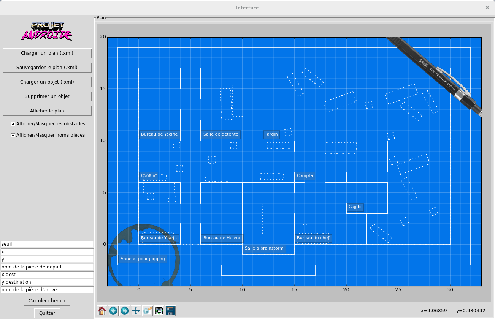
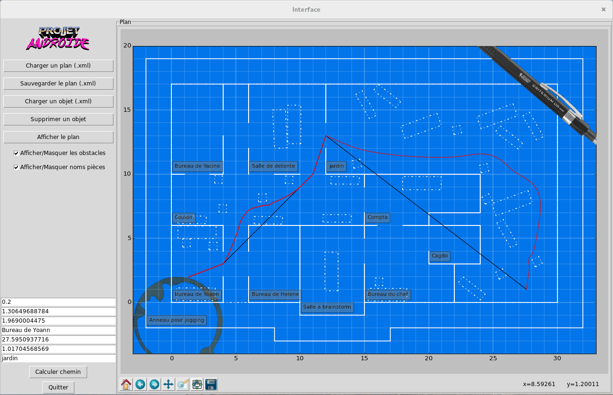

Documents du projet¶
Pré-requis¶
Afin d’utiliser notre programme il sera nécessaire d’installer:
- Un interpreteur python
- Tkinter
- BeautifulSoup
- pyglet (optionnel)
- sphinx (de préférence une version récente, sans quoi il peut y avoir des défauts d’affichage)
Lancement du programme¶
Pour lancer notre programme il faut se mettre dans le dossier main accessible via ‘./source’ Puis executer la commande ci-dessous dans un terminal :
$ ~/PAndroid/source/main python main.py
Format des fichiers XML¶
Les fichiers xml de plans devront respecter un certain format afin d’être lus. La structure attendue est la suivante :
data/plans/bp.xsd
<?xml version="1.0" encoding="UTF-8"?>
<!-- Element racine -->
<xsd:schema xmlns:xsd="http://www.w3.org/2001/XMLSchema">
<!-- declaration des elements -->
<xsd:element name="coordonnees" type="xsd:string"/>
<xsd:element name="coordEtNomPieceConnexe" type="xsd:string"/>
<xsd:element name="batiment" type="batimentType"/>
<xsd:element name="murs" type="mursType"/>
<xsd:element name="obstacles" type="obstaclesType"/>
<xsd:element name="obstacle" type="obstacleType"/>
<xsd:element name="piece" type="pieceType"/>
<xsd:element name="sortie" type="sortieType"/>
<!-- murs -->
<xsd:complexType name="mursType">
<xsd:sequence>
<xsd:element ref="coordonnees" maxOccurs ="unbounded"/>
</xsd:sequence>
</xsd:complexType>
<!-- obstacle -->
<xsd:complexType name="obstacleType">
<xsd:sequence>
<xsd:element ref="coordonnees" maxOccurs ="unbounded"/>
</xsd:sequence>
</xsd:complexType>
<!-- obstacles -->
<xsd:complexType name="obstaclesType">
<xsd:sequence>
<xsd:element name="nom" type="xsd:string"/>
<xsd:element ref="obstacle" maxOccurs ="unbounded"/>
</xsd:sequence>
</xsd:complexType>
<!-- sorties -->
<xsd:complexType name="sortieType">
<xsd:sequence>
<xsd:element ref="coordEtNomPieceConnexe" maxOccurs ="unbounded"/>
</xsd:sequence>
</xsd:complexType>
<!-- piece -->
<xsd:complexType name="pieceType">
<!-- nom de la piece -->
<xsd:all>
<xsd:element name="nom" type="xsd:string"/>
<xsd:element ref="murs"/>
<xsd:element ref="obstacles" minOccurs="0"/>
<xsd:element ref="sortie"/>
</xsd:all>
</xsd:complexType>
<!-- Batiment -->
<xsd:complexType name="batimentType">
<!-- nom du batiment -->
<!-- Liste des pieces -->
<xsd:sequence id="test">
<xsd:element name="nom" type="xsd:string"/>
<xsd:element ref="piece" minOccurs="1" maxOccurs="unbounded"/>
</xsd:sequence>
</xsd:complexType>
<!-- Racine -->
<xsd:element name="racine">
<xsd:complexType>
<xsd:sequence>
<xsd:element ref="batiment"/>
</xsd:sequence>
</xsd:complexType>
</xsd:element>
</xsd:schema>
Les fichiers décrivant les objets devront respecter le format suivant :
data/objets/obj.xsd
<?xml version="1.0" encoding="UTF-8"?>
<!-- Element racine -->
<xsd:schema xmlns:xsd="http://www.w3.org/2001/XMLSchema">
<!-- declaration des elements -->
<xsd:element name="coordonnees" type="xsd:string"/>
<xsd:element name="objet" type="objetType"/>
<!-- Objet -->
<xsd:complexType name="objetType">
<!-- nom de l'objet -->
<!-- Liste des segments -->
<xsd:sequence id="test">
<xsd:element name="nom" type="xsd:string"/>
<xsd:element ref="coordonnees" minOccurs="1" maxOccurs="unbounded"/>
</xsd:sequence>
</xsd:complexType>
<!-- Racine -->
<xsd:element name="racine">
<xsd:complexType>
<xsd:element ref="objet"/>
</xsd:complexType>
</xsd:element>
</xsd:schema>
Diagramme¶
Rapport¶
Manuel utilisateur¶
Une fois le programme lancé l’utilisateur se trouvera devant la fenêtre suivante:
Une fois qu’il aura selectionné un plan, choisi d’afficher ou non les obstacles et les noms des pièces, il pourra en afficher le contenu avec le bouton “Afficher le plan” et se retrouvera dans la configuration suivante (le plan ici utilisé est “blueprint2”) :
L’utilisateur pourra alors choisir de :
- Charger un nouveau plan
- Sauvegarder le plan actuel
- Charger un objet
- Supprimer un objet du plan (il faudra ensuite appuyé sur le clic gauche de la souris, l’objet supprimé sera le plus proche dans un rayon de 1 mètre. Pour quitter le mode de suppression l’utilisateur doit appuyer sur le bouton droit de sa souris.
- Afficher le plan
Cliquer sur le bouton “Charger un objet” fera apparaitre une nouvelle fenêtre, une fois l’objet choisi l’utilisateur pourra decider de sa position et de son orientation. Si son choix ne lui convient pas il se verra proposer de repositionner l’objet, d’annuler l’action ou, le cas contraire, d’en poser des copies.
Avant de lancer une exécution l’utilisateur devra remplir plusieurs champs.
- Le champ seuil, optionnel
- les champs de coordonnées
Le champ de seuil permet de définir la largeur, en mètres, du robot. Par défaut cette valeur est à 0.0, elle permet de visualiser le bon fonctionnement de la méthode (les erreurs possibles tenant de la définition de la ligne). Une valeur positive lancera l’éxecution d’une autre version de l’algorithme, si celle-ci ne marche pas parfaitemement (le seuil peut ne pas être respecté) elle permet d’avoir une première idée des résultats que l’on pourrait obtenir.
Afin de remplir les champs de coordonnées plus intuitivement il est possible de directement cliquer sur le plan à l’endroit souhaité. L’utilisateur se verra ensuite demandé de renseigner le nom de la salle sélectionnée. Les champs se rempliront alternativement, en commençant par le point de départ.
Pour désactiver l’affichage des artefacts (stylo et tache de café) l’utilisateur devra modifier le fichier “conf.py” du repertoire “source/interface/”. Il pourra aussi decider ou non d’afficher le résulat obtenu par le calcul préalable du plus court chemin (tracé noir).
Après avoir cliqué sur “Calculer chemin” le programme affichera progressivement les résultats obtenus (tracé rouge).
Ci-dessous, des exemples d’éxecutions, respectivement sans et avec seuil (0.2):
Une fois l’éxecution terminée un fichier sera sauvegardé dans le dossier ‘../data/res’. Identifié par la date d’éxecution, le plan traité et le seuil choisi, il contiendra les coordonnées des points de la courbe obtenue.